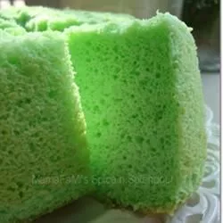

Pandan Chiffon

Description
Pandan cake is a fluffy, gorgeous green-colored chiffon cake made with aromatic South East Asian pandan paste.
Ingredients
- 6 eggs
- ¼ teaspoon cream of tartar
- ½ cup white sugar
- 8 tablespoons water
- ¼ teaspoon pandan paste
- 5 tablespoons corn oil
- 1 cup self-rising flour, sifted
Steps
- Preheat the oven to 325 degrees F (165 degrees C).
- Combine egg whites and cream of tartar in the bowl of a stand mixer fitted with the whisk attachment; beat egg whites until stiff peaks form.
- Beat egg yolks and sugar in a separate bowl until sugar has dissolved.
- Fold egg yolk mixture gently into beaten egg whites using a spatula. Pour into a 9-inch chiffon cake mold..
- Bake in the preheated oven until a toothpick inserted into the center comes out clean, 45 to 50 minutes. Invert cake mold onto a cooling rack immediately after removing it from the oven. Let cake cool upside down in the mold. Loosen cooled cake from the mold using a sharp knife.